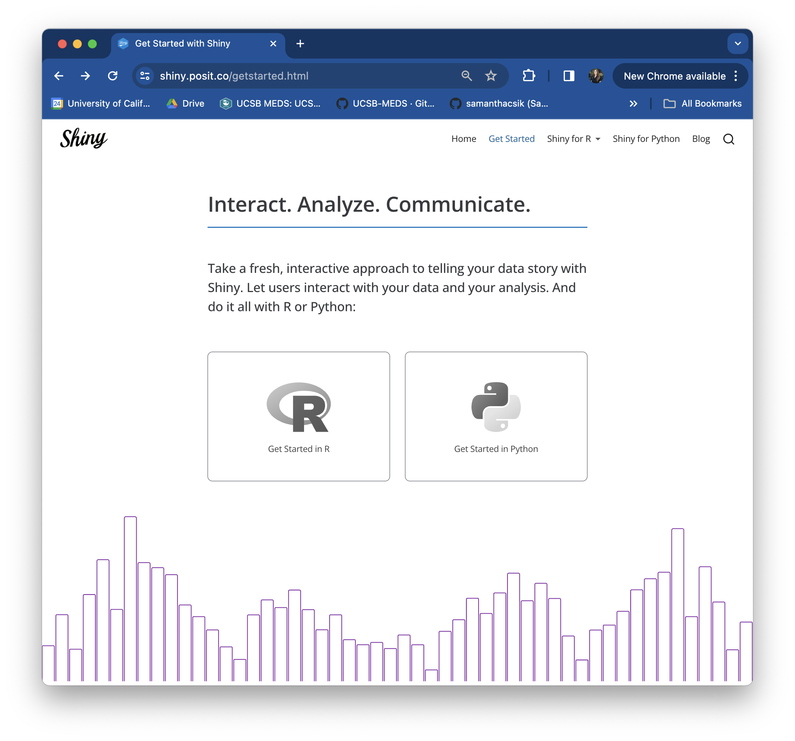

![A gif of Andre Duarte's 'Worldbank-Shiny' app. On the lefthand side of the app, the title 'Gapminder Interactive Plot' sits above a series of three widgets. The first is a dropdown menu where the user can select a region (e.g. Europe & Central Asia) or view all regions at the same time. The next two widgets are slider inputs -- the first allows the user to select a year between 1960 and 2014, and the second allows the user to select a population size between 500 and 5000. On the right hand side of the app is a bubble plot of Fertility Rate vs. Life Expectancy, which updates as inputs are changed by the user. Hovering a bubble displays thge corresponding Country, Region, Population, Life Expectancy, and Fertility Rate.](images/part1/worldbank-shiny.gif)
Worldbank-Shiny app to visualize fertility rate vs. life expectancy from 1960 to 2015, by Andre Duarte

“Shiny is an open source R package that provides an elegant and powerful web framework for building web applications using R. Shiny helps you turn your analyses into interactive web applications without requiring HTML, CSS, or JavaScript knowledge.”
-Posit
Worldbank-Shiny app to visualize fertility rate vs. life expectancy from 1960 to 2015, by Andre Duarte
Shiny apps are composed in two parts: (1) a web page that displays the app to a user (i.e. the user interface, or UI for short), and (2) a computer that powers the app (i.e. the server)
The UI controls the layout and appearance of your app and is written in HTML (but we use functions from the {shiny} package to write that HTML). The server handles the logic of the app – in other words, it is a set of instructions that tells the web page what to display when a user interacts with it.
Reactivity is what makes Shiny apps responsive i.e. it lets the app instantly update itself whenever the user makes a change. At a very basic level, it looks something like this:
Check out Garrett Grolemund’s article, How to understand reactivity in R for a more detailed overview of Shiny reactivity.

![A schematic of Shiny reactivity. The UI is represented by a light blue box. Inside the blue UI box, there is a radio button widget that says, 'Make a choice:' and three round radio buttons beneath it. Underneath that, there is a placeholder space for a reactive output to be created by the server. The server is to the left of the UI and is represented by an orange box. At a basic level, reactivity occurs after the following steps: (1) A widget gets information from a user which (2) is then passed to the server where it is used to update a data frame based on the users choice. (3) The new data frame is used to update outputs in the server, and (4) those outputs are then rendered in the UI.](images/part1/reactivity-intro.png)